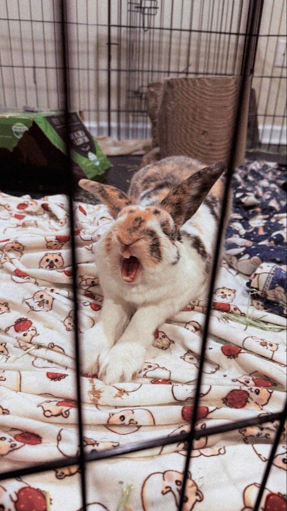
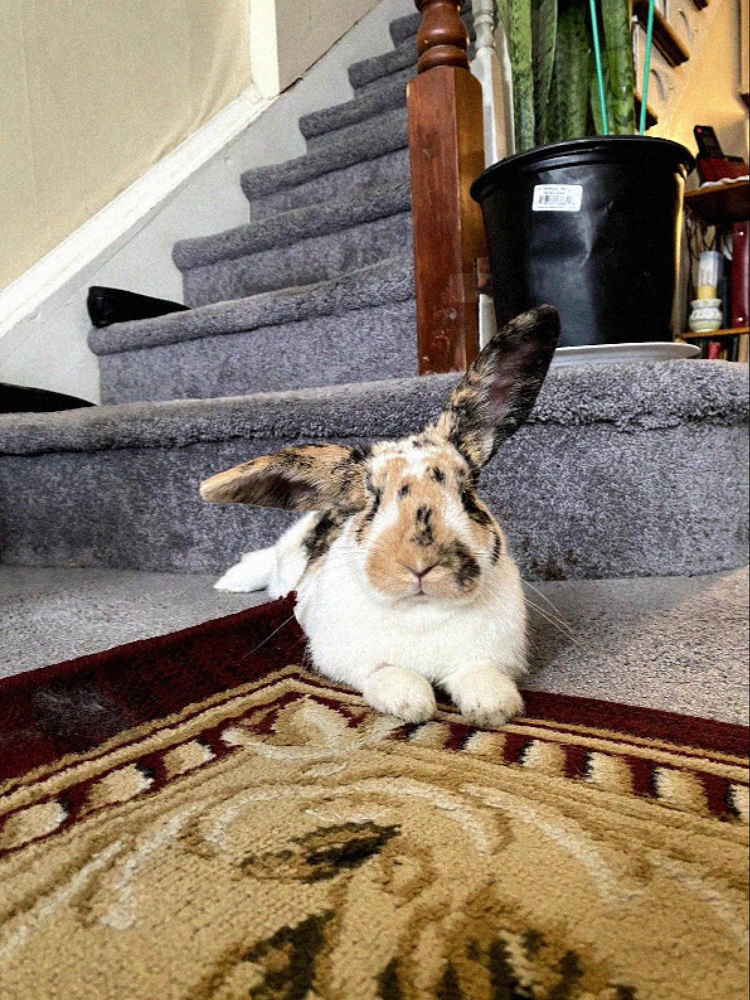
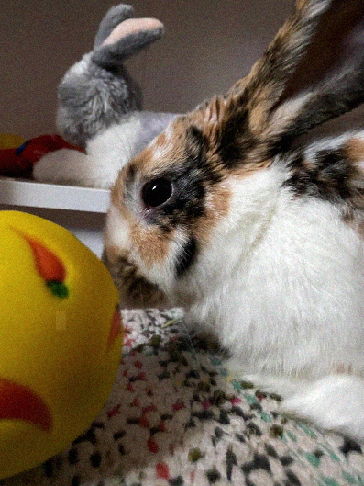
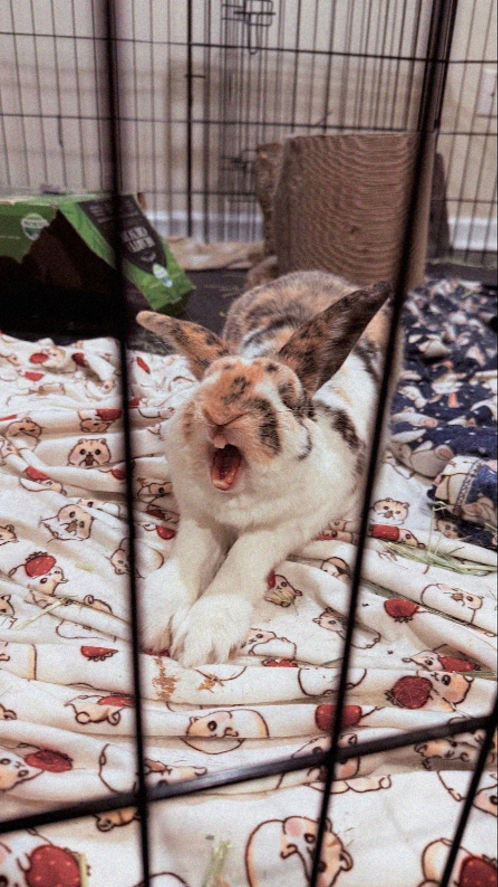
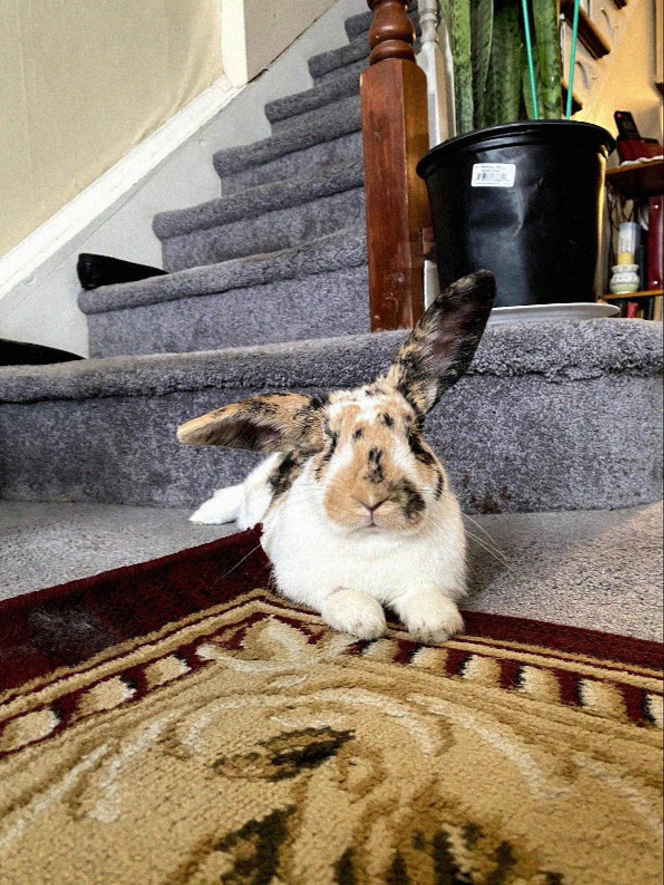
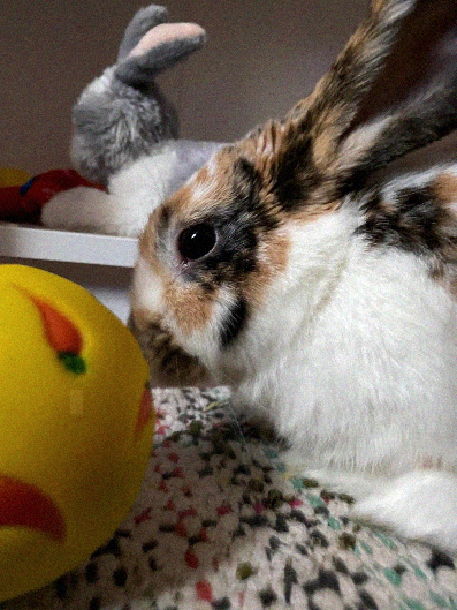
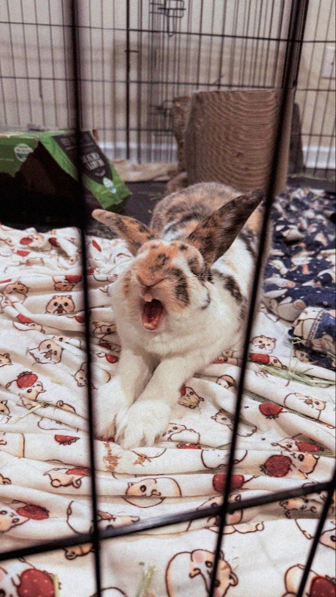
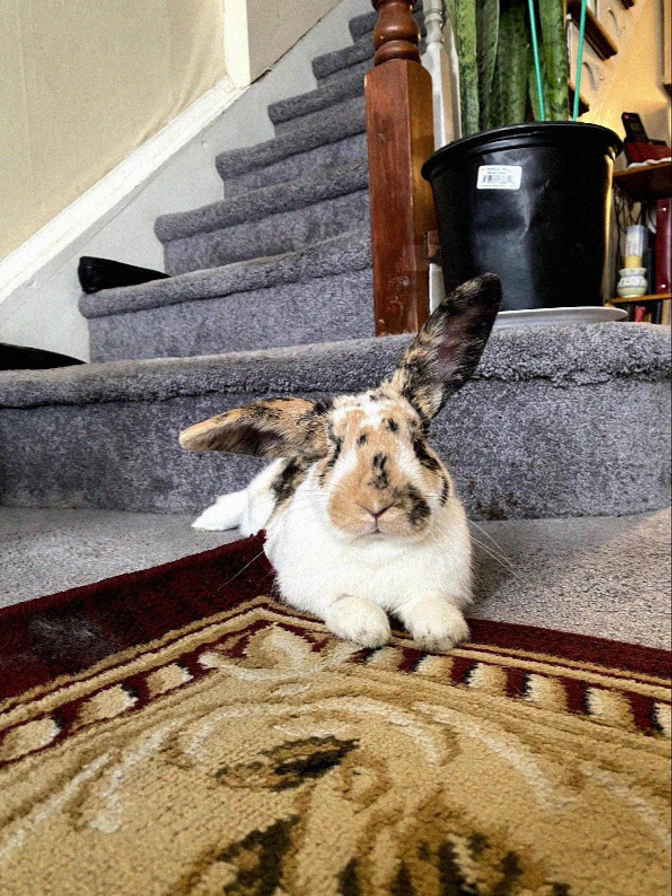
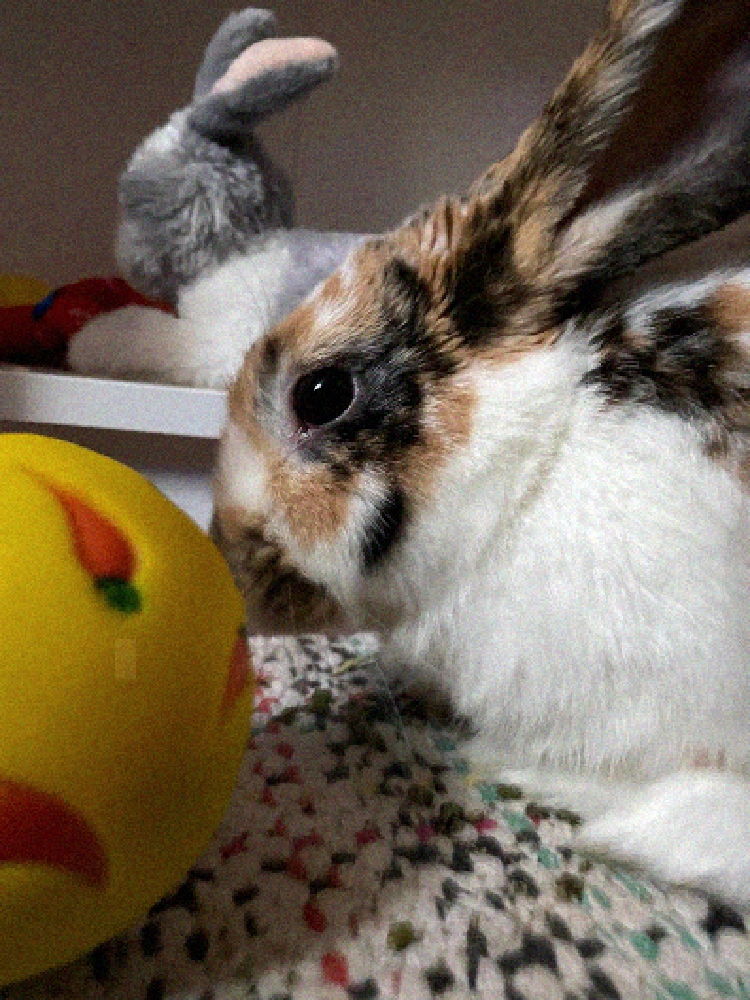

10.13.20 - 12.16.25
my sweet, funny, silly bunny. you were so fearless and always getting into things. i will always remember how you were the first to investigate anything new in your environment. you were so friendly and loved meeting new people. you loved attention and were always so good at the vet! you also loved pushing your blankets around and decorating the place exactly how you liked it. if we cleaned, you were right there, moving your cups around and 'helping'. i love you so much and will miss you forever. until we meet again my sweet girl.


